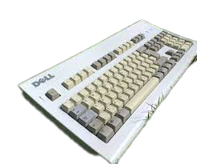
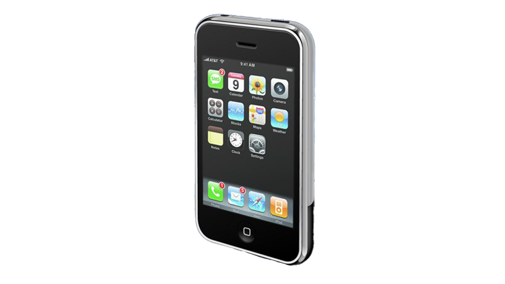
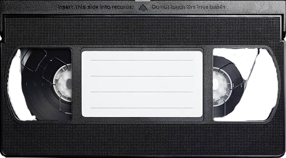
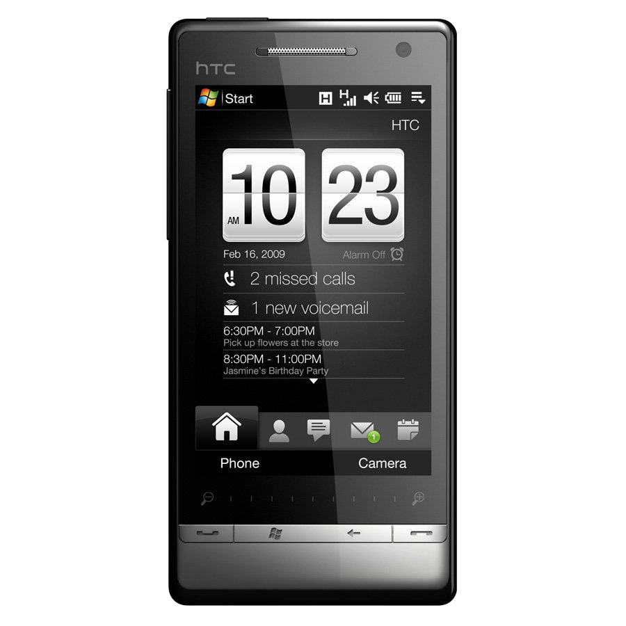
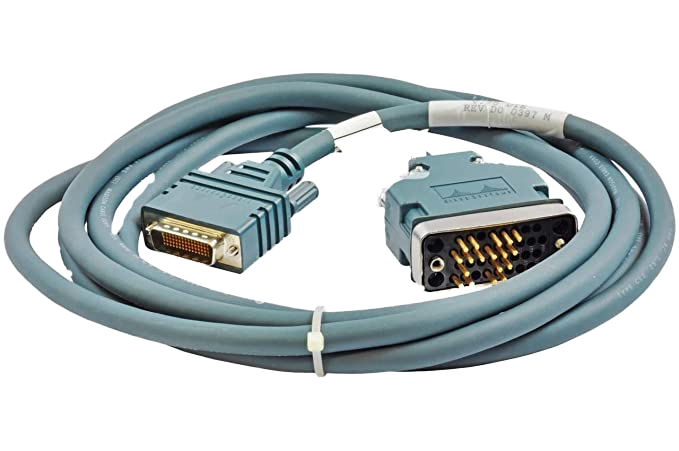
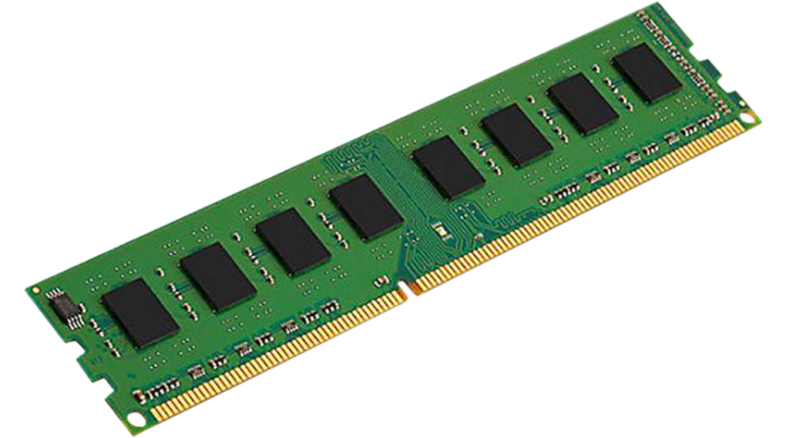
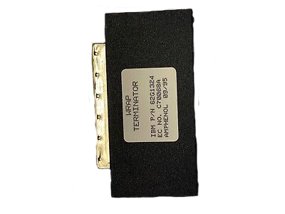
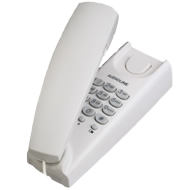
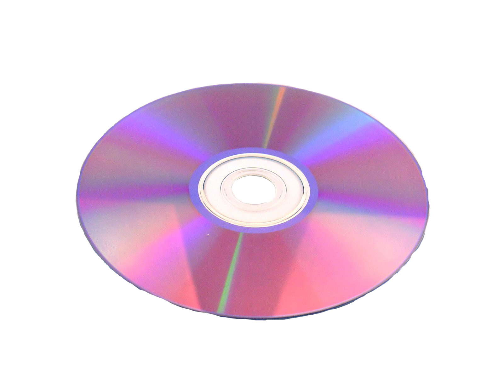
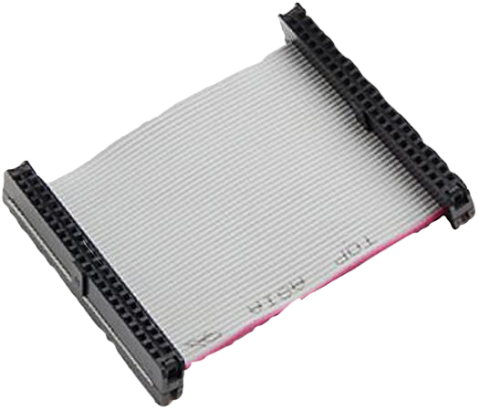

Floppy Disc

Floppy Disc
FACTS
Die Grösse: 9cm
Die Speicherkapazität: 1,44 MB
Das Format: 3,5 Zoll
Die Lebensdauer: 5 bis 30 Jahre
Der Nachfolger: CD, Iomega Zip, USB-Stick
Die erste Veröffentlichung: im Jahr 1969
Der Entwickler: Alan Shugart
Compaq Laptop

Compaq Portable
FACTS
Das Gewicht: 13kg
Das Betriebsystem: MS DOS 1.1
Die CPU: Intel 8088
Die Geschwindigkeit: 4,77 Mhz
Built in Media: 2x 5.25" Floppies von 160KB, 320KB and 30KB
Die erste Veröffentlichung: im Jahr 1983
Der Hersteller: Compaq Computer Corporation
Sony Ericsson T630

Sony Ericsson T630
FACTS
Das Gewicht: 92g
Die Memory: 16MB internal, mit Memory Stick Micro M2 bis zu 2GB
Die Auflösung: 128 x 160 pixels
Die Verbindungen: Bluetooth 1.0b,GPRS class 8, Infrarot Port und
firmeneigene USB
Die erste Veröffentlichung: im Jahr 2003
Der Hersteller: Sony Ercisson
IBM DOS

IBM DOS
FACTS
Die Sprachen: Englisch, Deutsch, Dänisch, Finnisch, Französisch,
Italienisch etc.
Die Betriebssystem Art:Denial Of Service
Die Verbindungen: WCDMA, GPRS, Bluetooth and USB 2.0
Die Entwicklungssprache: Assembly C
Die erste Veröffentlichung: im Jahr 1981
Der Hersteller:Microsoft IBM
Logitech Keyboard
Logitech Keyboard
FACTS
Der Wert: 1'000$
Die Vorteile: Gute Switches
Die Nachteile:Wird laut
Die erste Veröffentlichung: im Jahr 1985
Der Hersteller: IBM
iPhone
iPhone
FACTS
Das System auf dem Chip: Samsung S5L8900
Das Betriebssystem: iPhoneOS 1.0
Der Interner Speicher: 4, 8 oder 16 GB
Die Entwicklungssprache: Swift
Die erste Veröffentlichung: 2007
Der Hersteller:Foxconn
VHS
VHS
FACTS
Die Abkürzung von: Video Home System
Der Preis der ersten VHS: 1'000$ - 1'400$
Die Vorteile: Günstig, Covers meist interessant, Nostalgie
Die Nachteile:nicht HD, Zurückspulen ist eher mühsam
Die erste Veröffentlichung: 1976
Der Hersteller: JVC
Office

Office
FACTS
Die Programmiersprache: C++, C#
Die kompatiblen Betriebssysteme: Windows 98, 2000, Me, XP, Server 2003,
Vista, Server 2008
Die System Anforderungen ⮯
Die CPU: Intel Pentium 75 MHz oder 166 MHz für PhotoDraw
Die Memory: 16MB (Windows 95, 98, Me) / 32M (NT 4.0 SP3, 2000, XP,
Vista,
Server 2008)
Der Hersteller:Microsoft
WinTV-PVR-500

WinTV-PVR-500
FACTS
Die Gründer: Kenneth Plotkin, Kenneth Aupperle
Der Gebrauch:Sendungen aufnehmen und abspielen,
Die erste Veröffentlichung: 1982
Der Hersteller: Hauppauge
DC 2000 Cartridge Tape

DC 2000 Cartridge Tape
FACTS
Die Physische länge: 62.5m
Der Speicher: 40MB
Die erste Veröffentlichung: 1972
Der Hersteller: 3M
HDD

HDD
FACTS
Die Abkürzung: Hard Disk Drive
Die Speicherkapazität der ersten HDD : 3.75MB
Die Grösse der ersten HDD: die Grösse von ca. zwei Kühlschränke
Der Gebrauch: zur Speicherung
Die erste Veröffentlichung: 1956
Der Entwickler: IBM
Windows 95
Windows 95
FACTS
Die Abstammung: Windows 1.0
Der Kernel: MS-DOS
Die System Anforderungen ⮯
Die CPU: 386DX
Der Arbeitsspeicher: 4MB RAM
Der Festplattenplatz: 50MB
Die Laufwerke: Diskettenlaufwerk
Die erste Veröffentlichung: 1995
Der Entwickler: Microsoft
Intel i486 SX

Intel i486 SX
FACTS
Die Taktfrequenzen: 16, 20, 25 oder 33MHz
Die Fertigungstechnik:CHMOS IV mit 1,0µm
Die Betriebsspannung: VCore 5V
Die erste Veröffentlichung: 1991
Der Entwickler: Intel
Internet Explorer 4.0

Internet Explorer 4.0
FACTS
Erhältlich als: CD ROM
Die Integrierte Software: Microsoft Chat 2.0, Outlook Express,
NetMeeting,
Frontpage Express 2.0 und Realplayer
Der Typ: Web browser
Der Engine: MSHTML
Die erste Veröffentlichung: 1997
Der Entwickler: Microsoft
HTC TOUCH DIAMOND 2
HTC TOUCH DIAMOND 2
FACTS
Die Serie: HTC Touch Family
Die Dimensionen:107,85 x 53,1 x 13,7 mm
Das Gewicht: 117,5g
Das Betriebssystem: Windows Mobile 6.5 Professional
Die Memory: 512MB ROM, 288MB RAM
Der Entwickler: High Tech Computer Corporation
Cisco DTE V35
Cisco DTE V35
FACTS
Die Ausgangsspannung: 6 V
Das Gewicht: 408g
Die Breite: 4 cm
Die Höhe: 2.3 cm
Die Marke: Cisco
RAM
RAM
FACTS
Die Abgekürzung von:Random-Access-Memory
Die Vorgänger: Magnetbänder und Lochkarten (1930)
Der erste Chip: 1MB, 1989
Der Erfinder: William Hurter (Schweizer)
Loopback Plug
Loopback Plug
FACTS
Der Gebrauch: Testen der Signale
Die Anzahl Pins: 68 Pins
Die Breite: 6 cm
Die Höhe: 1,5 cm
Der Hersteller: Foxconn
Festnetz Telefon
Festnetz Telefon
FACTS
Die Übersetzung ins Altgriechische: Tēle (Fern) phōnē (Laut, Ton,
Stimme, Sprache)
Die Vorgänger: Telegrafie (1837)
Das Erfindungsjahr: 1876
Der Erfinder: Alexander Graham Bell
DVD ROM
DVD ROM
FACTS
Die Abkürzung für: Digital Disc Read-Only Memory
Die Kapazität: 4,7 GB (Single Layer) 8,5 GB (Dual Layer) und mehr
Der Ursprung: CD ROM
Die Lebensdauer: ca. 10 Jahre
Der Entwickler: Phillips, Sony
ATA Kabel
ATA Kabel
FACTS
Die Abkürzung für: AT Attachment
Der Gebrauch: parallelen Datentransfer zwischen Laufwerken
Die Übertragungsrate: 150MB/s
Das Erfindungsjahr: 1989
Der Entwickler: Western Digital
Nokia 3310
Nokia 3310
FACTS
Die Serie: Nokia 3310
Die Akkulaufzeit: max. 260 Std.
Die Dimensionen:113 x 48 x 22 mm
Die Anzeige: 84 x 84 Pixel, monochrom
Das Betriebssystem:NOS (Nokia Operating System)
Der Speicher: 1MB
Der Entwickler: Nokia